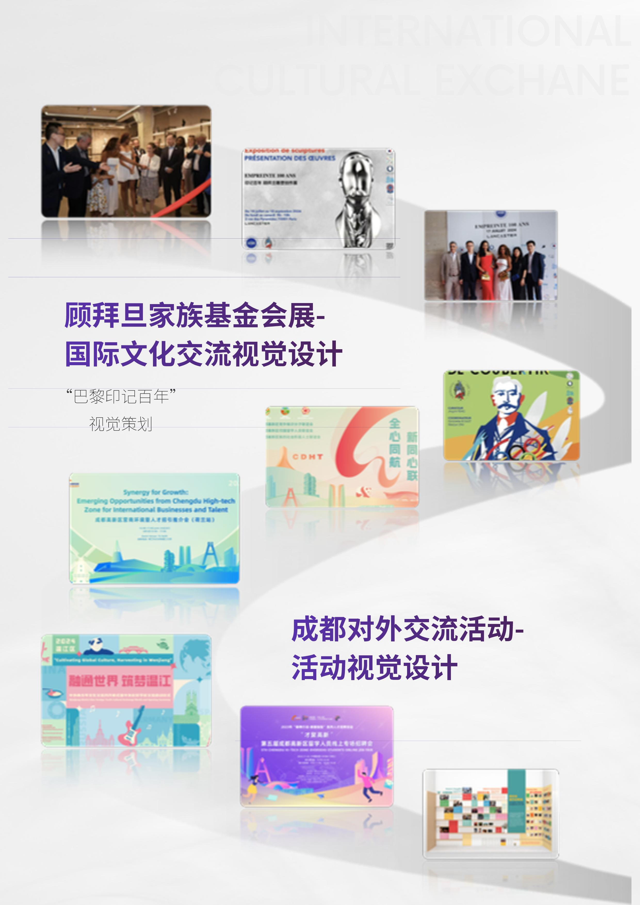

○ MIE Art & Culture · Foundation Exhibition · 基金会展览
顾拜旦基金会
文化展
文化展
Coubertin Foundation — Cultural Exhibition
顾拜旦家族的庄园里有一种特殊的静默——现代奥林匹克运动的起源就在这里，而这栋建筑本身就是对那个时代关于身体、竞争与人类精神之信念的无声记录。
The Coubertin Foundation estate — situated outside Paris in Saint-Rémy-lès-Chevreuse — is one of those places where history is not displayed but simply present. The house, the grounds, the remaining artefacts of Pierre de Coubertin's life and work carry the atmosphere of a certain kind of idealism.
The exhibition was developed for a specific moment: the year Paris hosted the Olympic Games, when the foundation's historical significance took on a renewed contemporary charge. The curatorial challenge was to honor this significance without reducing it to nostalgia or official commemoration.
The approach was to use the exhibition as an opportunity to put the Coubertin legacy into genuine conversation with contemporary cultural perspectives — particularly those from the East, which have a distinct relationship to the values of athletic culture, collective achievement, and the philosophy of competition.
展览是为一个特定时刻而开发的：巴黎举办奥运会的年份，基金会的历史意义获得了新的当代分量。策展挑战是尊重这种重要性，而不将其简化为怀旧或官方纪念。方法是将展览作为一个机会，将顾拜旦的遗产与当代文化视角进行真正的对话——特别是来自东方的视角，那里与体育文化、集体成就和竞争哲学的价值观有着独特的关系。
The exhibition was organized around a conceptual frame: what does it mean to bring together, in one space, artifacts and perspectives from different civilizations' engagements with the same fundamental human activities — movement, contest, excellence, defeat?
Rather than presenting a linear history, the curation moved thematically — grouping objects, images, and texts not by chronology but by the quality of question they raised. The design of the exhibition allowed visitors to find their own path through material that didn't have a single correct reading.
The foundation's archival material — Coubertin's correspondence, early Olympic documentation, photographs — was juxtaposed with contemporary works and cultural objects in ways that made neither the historical nor the contemporary simply illustrative of the other.
展览围绕一个概念框架组织：将来自不同文明对同一基本人类活动——运动、竞争、卓越、失败——的参与的文物和视角汇集在一个空间中，意味着什么？策展主题性地移动——不是按年代顺序，而是按照它们提出的问题的质量来分组物件、图像和文本。
A house that already carries its own narrative — the task is not to override it, but to extend its conversation.
The estate's architecture and grounds became part of the exhibition itself. The route took visitors through interior rooms where archival material was displayed, then outside into spaces where contemporary works responded to the landscape and its history.
The opening was designed as a cultural event in its own right — attended by representatives from the foundation, from the Chinese cultural community in Paris, and from the broader European arts world. The evening program combined brief curatorial presentations with musical performance and a reception that allowed the exhibition space to function as a gathering space.
The quality of the opening created a context for the exhibition's subsequent public run — establishing, before the general audience arrived, a sense of cultural significance that informed how the space was experienced in the days that followed.
庄园的建筑和庭院本身成为展览的一部分。路线带着访客穿过展示档案材料的室内房间，然后进入室外空间，当代作品在那里回应景观及其历史。开幕式本身被设计成一个文化活动——有来自基金会、巴黎华人文化社区和更广泛欧洲艺术界的代表参加。
A bridge between an important European cultural institution and a contemporary East-West creative conversation — at a historically resonant moment.
The exhibition opened new institutional relationships between MIE Art & Culture and the Coubertin Foundation — relationships that extended beyond the exhibition itself into ongoing dialogue about future programming.
For the Chinese creative community in Paris, the project represented a meaningful form of cultural access — entry not through commercial channels but through the quality of curatorial work into a prestigious European cultural institution. This matters because it models a different kind of relationship between communities than simple tourism or commercial exchange.
The timing — Paris Olympic year — gave the project a visibility that extended beyond its immediate audience, connecting it to a broader global conversation about athletic heritage, internationalism, and the meaning of cultural exchange.
展览在MIE Art & Culture和顾拜旦基金会之间开辟了新的机构关系——这些关系延伸到展览本身之外，进入关于未来项目的持续对话。对于巴黎的华人创意社区来说，这个项目代表了一种有意义的文化接触形式——不是通过商业渠道，而是通过策展工作的质量进入一个声誉卓著的欧洲文化机构。

Coubertin Foundation Cultural Exhibition · Paris · 2024